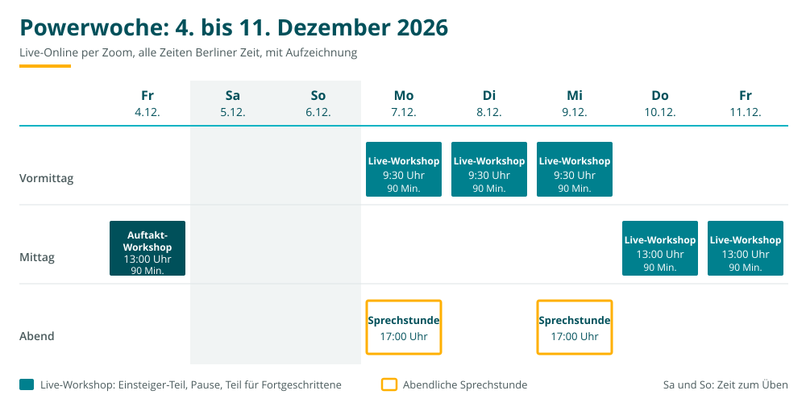
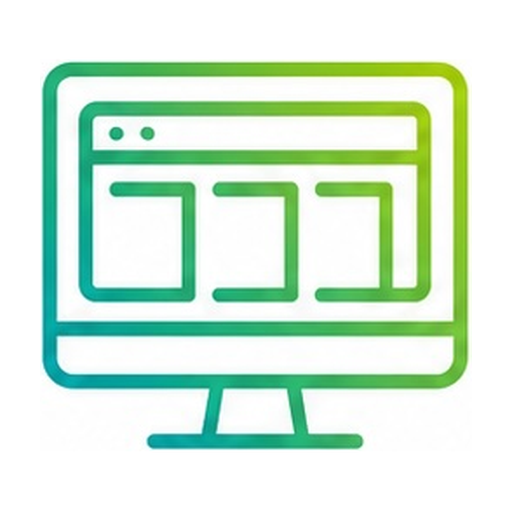
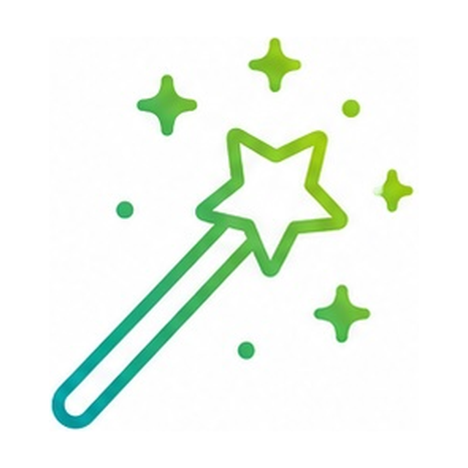
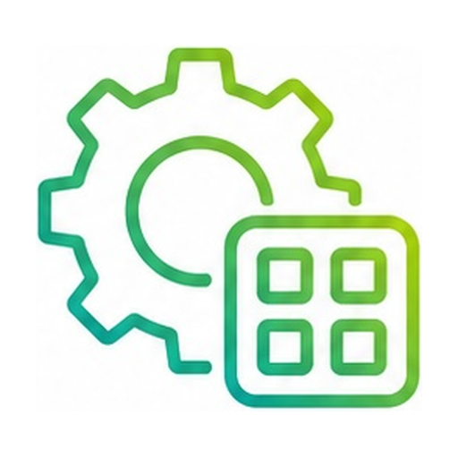
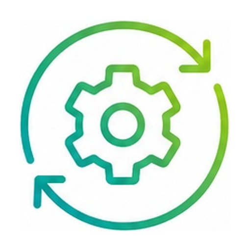
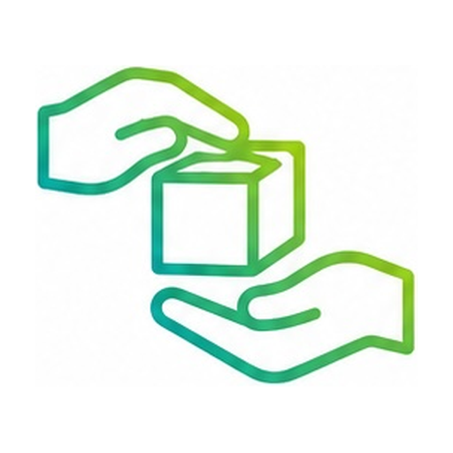
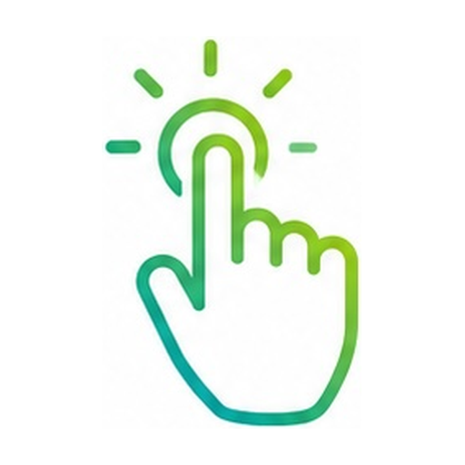
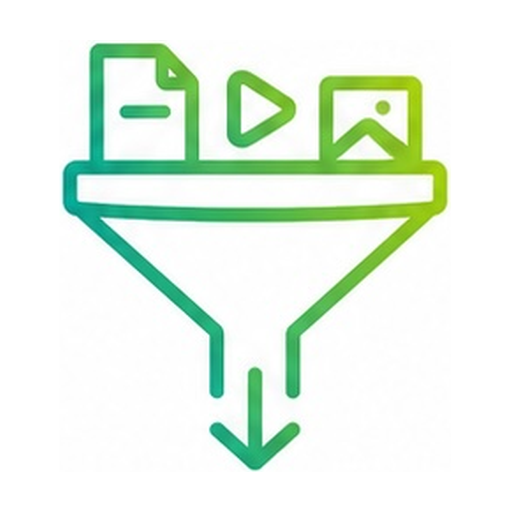
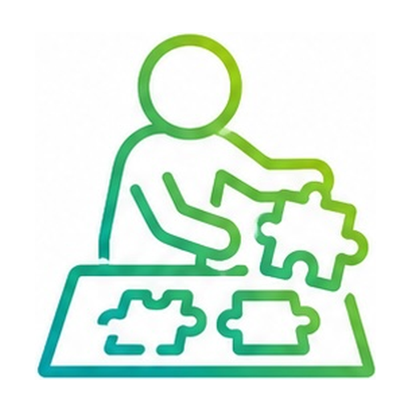
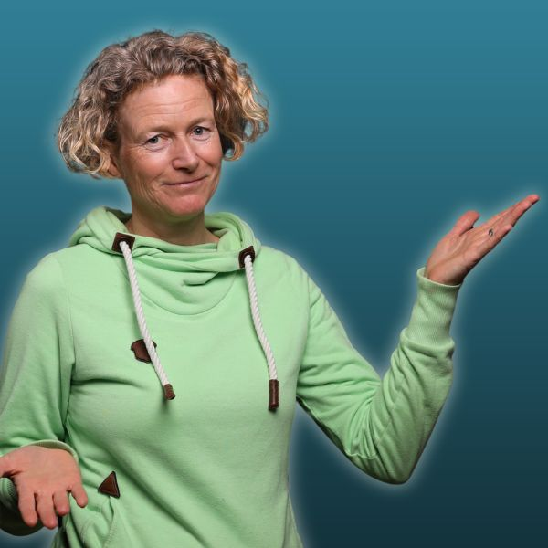

Eine Woche lang gehen wir den Kurs gemeinsam live an: mit Workshops, Sprechstunden und einem Forum zum Austausch. Du bekommst feste Termine, Feedback und Menschen, die mit dir am Ball bleiben.
Nur bis Montag, 7. Dezember buchbar. Selbstlernkurs mit Powerwoche: 275,- € netto (327,25 € brutto).
Du hast den Kurs schon? Die Infos zum Aufstocken bekommst du separat per Mail.
Als Soloselbstständige mache ich alles selbst und bin für alles allein zuständig. Das ist meine freie Entscheidung - ich liebe mein Solo-Business! Aber die vielen kleinen (digitalen) Routine-Handgriffe kosten auf Dauer Kraft und Nerven. Die reinen KI-Chatbots waren hilfreich, aber es blieb immer noch der meiste Teil der nervigen Arbeit an mir hängen - wo war die versprochene Arbeitserleichterung durch die KI?
Seit Februar 2026 ist nun Claude Cowork genau dieser co-kreative "Mitarbeiter", der mir nicht sloppy KI-Content ausspuckt, sondern mich in meinem Alltag entlastet! Er verbindet die Coding-Fähigkeiten eines KI-Agenten mit der Sprachfähigkeit eines Chatbots - was für Menschen ohne Coding-Erfahrung ganz neue Möglichkeiten öffnet.
Du kannst damit Claude wirklich für dich arbeiten lassen: Dateien erstellen, Ordner durchsuchen, Medien lokal erstellen lassen, Workflows automatisieren, hilfreiche Tools bauen, deine bewährten Apps und Programme verbinden und einiges mehr.
„Es macht so einen großen Spaß, nach und nach Claude Cowork so zu briefen, dass er mir die wiederkehrenden Aufgaben abnimmt - und zu erleben, wie kreativ er und ich gemeinsam sein können! ✨
Das spart mir nicht nur Zeit, sondern ich fühle mich dadurch auch empowert, neue Dinge anzugehen, die ich früher nicht für möglich hielt oder für die mir die Energie fehlte. Mein Wirkungskreis hat sich dadurch total erweitert."
Ein Selbstlernkurs wartet geduldig, und der Alltag drängelt sich davor. In der Powerwoche reservieren wir uns gemeinsam eine Woche dafür. Du lernst von den Beispielen und Fragen der anderen und kommst mit deinem Kurs konkret voran.

Jeder Tag hat zwei Teile. Erst gibt es Input und Erklärung für alle, die noch nicht viel vom Kurs geschafft haben. Nach einer kurzen Pause folgt der Teil für Fortgeschrittene, mit einer optionalen Aufgabe für den Tag.
Montag, 7.12., und Mittwoch, 9.12., jeweils um 17 Uhr: deine Fragen, dein Stand, ich schaue mit dir drauf.
Während der ganzen Woche kannst du Fragen stellen, Beispiele zeigen und von den anderen lernen.
Du kannst nicht live dabei sein? Du bekommst alle Aufzeichnungen und holst nach, was du verpasst hast.
Die Powerwoche passt, wenn du Austausch, Feedback und einen festen Rahmen magst. Lernst du lieber ganz in deinem eigenen Tempo, bleibt der Selbstlernkurs pur genau das Richtige.

Landingpages selbst bauen - kein Designer & kein Tool mehr nötig

Word, Excel, PowerPoint und Grafiken - fertig, im eigenen Stil, in Minuten
Videos schneiden, Audios verarbeiten - lokal auf deinem Rechner, ohne Abo

Claude arbeitet direkt in WordPress, GetResponse & Co. - was deutlich Zeit spart

Aufgaben, die dich jede Woche Stunden kosten - einmal eingerichtet, brauchst du sie nur noch anstoßen

Eigene Skills bauen: deine besten Abläufe speichern und jederzeit wieder abrufen

Interaktive Tools für dich oder deine Kunden - kreative Lösungen für deine Herausforderungen

Transkript rein - Blogartikel, Social Post, Newsletter raus. Content-Repurposing leicht gemacht
… und das alles kannst du kombinieren zu ganzen Workflows, variieren und zu wiederkehrenden Aufgaben machen. Dein Coworker lernt im Laufe der Zeit, wie du arbeitest und was du brauchst!
Du startest nicht mit der komplexen Aufgabe, sondern mit einer kleinen, machbaren: den Praxislektionen als Mini-Challenges. Die Erklärlektionen sorgen dafür, dass du verstehst, was du tust, statt nur abzuarbeiten. Und die Tutorials übersetzen das Gelernte in klassische Alltagsprobleme von Solo-Selbstständigen. Alle drei greifen ineinander - und ergeben am Ende ein System, das für dich arbeitet.

Jede Lektion bringt dich einen konkreten Schritt weiter: Ordnerpower, Automatisierung, Konnektoren, Medienwerkstatt, eigene Skills. Mit Erklärung, konkretem Prompt und klarer Anleitung.
Wie eine Challenge, die dir mundgerecht aufbereitete Übungen an die Hand gibt - du musst sie nur machen. 😊
Du übst nicht - du baust auf.
Wie funktionieren Tokens? Welche unterschiedlichen Arten von Skills gibt es? Was macht eine gute CLAUDE.md aus? Welche Developer-Tools machen deinen Rechner zum Powerhouse?
Die Erklärlektionen zeigen dir bewährte Vorgehensweisen, damit du verstehst, warum Claude etwas vorschlägt - statt es einfach zu übernehmen.
Damit du Claude führst - und nicht blind übernimmst, was er vorschlägt.
Landingpages verlässlich im eigenen Design ausliefern, den Newsletter per Sprachnachricht automatisieren, Videoschnitt mit FFmpeg und DaVinci, YouTube als Weiterbildungsquelle nutzen.
Ein Teil ist schon fertig, weitere Tutorials zu typischen Alltagsproblemen kommen laufend dazu.
Klassische Herausforderungen von Solo-Selbstständigen, konkret gelöst.
Nach der Anmeldung startet automatisch eine Mail-Serie mit einzelnen Lektionen und Praxisaufgaben im Fokus: motivierende Tipps, vertiefende Erklärungen, weiterführende Ideen.
Kein klassischer Newsletter, sondern ein automatisierter Begleiter, der dich Schritt für Schritt durch neue Schwerpunktthemen führt - egal, ob du heute oder erst in ein paar Monaten startest.
Damit du dranbleibst - egal, wann du einsteigst.
Fertige Skills für typische Arbeitsprozesse von Solo-Selbständigen, die du mit einem Klick in deiner Claude-App installierst und sofort nutzen kannst - von mir entwickelt und getestet.
Du bekommst in Minuten ins Laufen, was ich meist in mehreren Stunden ausprobiert und als guten Prozess aufgebaut habe.
Direkt einsetzen - kein Herumprobieren.
Viele Kundenstimmen stammen aus dem begleiteten Gruppenkurs (Claude Cowork Deep Dive Programm) - die Lerninhalte sind identisch mit dem Selbstlernkurs, den du hier buchst.
Selten so viel in so kurzer Zeit gelernt. Natürlich liegt das auch am Thema. Claude Cowork hat mich brennend interessiert, weil ich als Solo-Selbstständige endlich meine Prozesse automatisieren wollte, damit nicht mehr so viel Zeit täglich für Handarbeit drauf geht.
(Spoiler: das hat auch geklappt, beziehungsweise klappt immer noch.) Marit hat mich ganz toll auf den Weg gebracht, wie ich mit der KI am besten kommuniziere. Und wenn wir eigene Wege gingen, ganz wunderbar immer wieder die Fäden zusammengeführt.
Durch den Kurs weiß ich nun wirklich, wie ich Cowork sinnvoll in mein Business integriere, was alles möglich ist, wie ich meine Ergebnisse verbessere und mir gleichzeitig die Arbeit enorm erleichtere.
Der Kurs ist didaktisch sehr gut aufgebaut. Die Kombination aus Wissensvermittlung und konkretem Experimentieren ist gelungen, und die Begleitung durch Marit einfach toll.
Vom ersten Moment an war ich begeistert - und bin es noch. Du gehst total in diesem Thema auf, experimentierst herum, hast so ständig neue Ideen und bereitest uns diese in kleinen Häppchen und sehr gut verständlich auf.
Ich habe mich über jede neue Lektion und jede E-Mail von dir gefreut!
Landingpage gebaut, Video-Workflow automatisiert, eigenes Tool programmiert, Newsletter gestartet: Das haben Teilnehmende in wenigen Wochen konkret erreicht.
Dieser Kurs hat mir die Welt von Claude Cowork eröffnet. Als Einzelunternehmerin hatte ich vorher kaum Berührungspunkte mit Claude, wenn dann nur im Chat.
Durch die Praxislektionen mit glasklarer Anleitung habe ich Stück für Stück ein ganzes Repertoire an Möglichkeiten kennengelernt. Jede Lektion ist super praxisnah: schrittweise Anleitung, Prompt-Vorlagen, und am Ende Ideen, wie man das im eigenen Business nutzen kann.
Ich kann Claude Cowork jetzt schon wie einen Mitarbeiter einsetzen und meine Prozesse laufen so viel schneller und effizienter.
Meine Video-Aufgaben laufen jetzt per Knopfdruck. Vor dem Deep Dive war bei mir vieles chaotisch: Systeme, Aufgaben, alles hat Energie gezogen. Ich wollte am liebsten eine Assistentin, der ich jederzeit Arbeit abgeben kann - am Schreibtisch genauso wie mit den Füßen auf dem Sofa.
Heute ist Claude mit Dispatch für mich wie ein zweites Gehirn: Thumbnail erstellen, Video hochladen, Aufgaben erledigen - vieles geht per Sprachnachricht oder ist nur noch einen Knopfdruck entfernt!
Marit bringt einen klaren roten Faden in ein komplexes Thema - ihre Freude, Kompetenz und langjährige Erfahrung sind in jeder Lektion spürbar.
Nach nur zwei halben Tagen mit Marits Kurs hat Claude Cowork für mich Dinge erledigt, die ich früher anstrengend fand: interne Verlinkungen im Blog, einen fertigen Blogartikel, einen Entwurf für eine neue Angebotsseite.
Ich bin hin und weg und empfehle Marit von Herzen weiter.

Im Februar 2026 habe ich Claude Cowork auf einer Workation entdeckt - und es war für mich ein zweiter großer Shift in der Arbeit mit KI. Plötzlich war da nicht mehr nur ein Chatbot, der antwortet. Da war ein Assistent, der auf meinem Rechner arbeitet, in meinen Ordnern schreibt, meine Tools kennt.
Seitdem lasse ich einen nervigen Workflow nach dem anderen los: Zoom-Aufzeichnung kommt rein, Kurslektion geht raus. Video transkribieren, hochladen & einbetten, Newsletter fertig formatiert von Getresponse aus verschicken - mit einem Befehl. Ich baue Skills, kleine Skripte, interaktive Tools - und sogar ein eigenes Plugin. Dinge, die ich vorher so nicht allein machen konnte. Claude Cowork arbeitet im Hintergrund mit und ist gleichzeitig ein fähiger Programmierer - das ist mega!
In diesem Kurs gebe ich alle Lernmaterialien weiter, die ich für mein Gruppenprogramm "Claude Cowork Deep Dive Programm" entwickelt habe - inzwischen über Monate gewachsen und geschärft an dem, was für Solo-Selbstständige wirklich nützlich ist. Du bekommst nicht nur Lektionen, sondern eine Infrastruktur, die mit dir weiterwächst.
Ich hatte tatsächlich etwas Berührungsängste mit der KI, da ich sie nicht so ohne weiteres auf meinen Rechner lassen wollte. Also habe ich mir ein Laptop für die KI gekauft, so als hätte ich eine neue Assistentin und würde ihr ein Laptop für die Zusammenarbeit zur Verfügung stellen. [...]
Am meisten geflasht bin ich nach wie vor, dass Claude Cowork einfach viele Aufgaben parallel bearbeiten kann und ich meine täglichen ToDos auf diese Weise einfach „abgeben" lerne.
Deine Lernvideos sind super einfach erklärt und strukturiert, damit kommen mein Assistent und ich gut weiter. Danke vielmals!
KI in allen Ausprägungen ist für meine Anwenderfragen als Solounternehmer ein ziemlicher Brocken - oder besser: der Mount Everest schlechthin.
Marit ist für mich die richtige Sherpani, auch wenn sie mit der Spitzengruppe schon weit voraus ist. Ich fühle mich bestens aufgehoben mit meinen Fragen und Übungsergebnissen auch abseits der Hauptroute. Bin zuversichtlich, dass alle Pfade zum Gipfel führen.
Mich hat besonders beeindruckt, welche Möglichkeiten sich dadurch eröffnen. [...]
Dank Marits Inspirationen habe ich mich sogar getraut, eine eigene Sprachlern-App zu erstellen, ohne Programmier-Kenntnisse zu haben.
Auch die Begleitung durch Marit war einfach hervorragend: Sie ist sehr strukturiert, verfügt über ein beeindruckend tiefes Wissen und bringt gleichzeitig eine große Neugier mit, neue Dinge auszuprobieren und Zusammenhänge wirklich zu verstehen.
Ich habe sehr viel erreicht, und was noch viel wichtiger ist: Ich weiß, dass ich durch den Kurs noch viel, viel mehr erreichen kann.
Liebe Marit, vielen Dank für die tollen neuen Möglichkeiten, die du mir durch den Kurs eröffnet hast. Ich kann deinen Kurs absolut empfehlen.
Du hast den Selbstlernkurs schon? Die Infos zum Aufstocken auf die Powerwoche bekommst du separat per Mail.
14 Tage Zufriedenheitsgarantie: Wenn du merkst, dass der Kurs nicht das Richtige für dich ist, kannst du innerhalb von 14 Tagen nach der Buchung zurücktreten. Ich erstatte dir den Kaufpreis abzüglich einer Bearbeitungspauschale von 20 €.
Die Zahlung läuft über den Zahlungsdienstleister Mollie. Deine Rechnung bekommst du separat per E-Mail von mir, mit etwas Zeitverzug, da ich sie noch selbst erstelle.
Die Lektionen sind nach Themen gruppiert, nicht in einer starren Modul-Abfolge. Du kannst chronologisch durchgehen oder gezielt bei dem Thema einsteigen, das dich gerade am meisten weiterbringt.
Desktop-App, Oberfläche, Einstellungen - damit dein Cowork startklar ist, bevor es losgeht.
Ordnerpower, echte Dateien, Branding, Autopilot für wiederkehrende Aufgaben - die Kernfunktionen Schritt für Schritt erleben.
Claude verbindet sich mit deinen Tools: Notizen-App und mehr - erst spielerisch erleben, dann zu Workflows machen.
Freebies selbst bauen, deine erste Landingpage, ein eigener Baukasten aus Design-Blöcken - ganz ohne Tool-Abo.
Transkription und Videoschnitt lokal auf deinem Rechner, YouTube als Wissensquelle für deine eigene Weiterbildung.
Karussell-Posts, Bildbearbeitung und Folienvorlagen im eigenen Design - lokal erstellt, direkt einsetzbar.
API-Verbindungen, MCP-Konnektoren, Mini-Apps als Werkzeugbauer - Claude als Redakteur deiner Website.
Deine CLAUDE.md gemeinsam überarbeiten, einen eigenen Skill bauen, Claudepedia als Glossar für alle Fachbegriffe.
Hintergrundwissen zu Tokens, Developer-Tools, Einstellungen, CLAUDE.md und mehr - damit du nicht nur anwendest, sondern verstehst und einordnen kannst, was Claude dir vorschlägt.
Schritt-für-Schritt-Anleitungen für klassische Solo-Selbstständigen-Themen wie Landingpages, Videoschnitt oder Newsletter-Automatisierung - weitere kommen laufend dazu.
Fertige, geprüfte Skills von mir - direkt einsetzbar für typische Business-Prozesse.
Der Kurs wächst weiter
Die Praxislektionen, Erklärlektionen und Skills sind fertig und sofort nutzbar. Bei den Tutorials (ausführliche Video-Anleitungen) für den Solo-Alltag ergänze ich noch einige weitere Themen, die für dich als Solo-Selbstständige besonders relevant sind. Per Mail erfährst du, wenn etwas Neues dazukommt.
Vor der Challenge bei Marit kannte ich Claude noch gar nicht. [...] Was mich neugierig gemacht hat, war das kostenfreie Webinar von Marit und wie sie gezeigt hat, dass man sich mit Claude einen eigenen Assistenten bauen kann, der die eigenen Prozesse abbildet.
In den acht Wochen habe ich eine Landingpage gebaut, meinen Newsletter gestartet, bestehende Seiten SEO-optimiert und eine funktionierende Ordnerstruktur etabliert. [...]
Für Soloselbstständige lohnt sich das auf jeden Fall: Man baut sich einen eigenen digitalen Assistenten auf, der die eigenen Prozesse kennt.
Das war ein wilder Ritt für mich, ein Intensivkurs, der mich vom technischen Verständnis und der Umsetzung wirklich herausgefordert hat.
Vermutlich hätte ich abgebrochen, wenn Marit uns als Nicht-Techies nicht so gut durch die „KI-Prärie" geführt hätte. Ihre mutige und freudige Einstellung gegenüber diesem Mega-Tool mit seinen für „normale Cowboys" unglaublichen Möglichkeiten hat mich auf dem Weg gehalten.
Ich freue mich darauf, meine Kreativität und Produktivität an den richtigen Stellen damit deutlich zu erweitern. Danke für dieses Zukunfts-Geschenk!
Ich habe meine Berührungsängste mit Claude verloren, erste Landingpages programmiert, ein paar Routineaufgaben ausgelagert und vor allem verstanden, wie viel mehr noch möglich ist, das ich nach und nach umsetzen werde.
Danke Marit, dass du uns eine so steile Lernkurve ermöglicht und immer für alle Fragen dagewesen bist - ohne dass wir dabei von dir „abhängig" wurden. Du hast mich sehr ermutigt, meinen eigenen Weg zu gehen mit Claude und nicht so schnell locker zu lassen, wenn etwas nicht gleich funktioniert.
Denn oft kann Claude selbst mir helfen, die Lösung zu finden. Und das ist wirklich faszinierend.
Zur Powerwoche:
Eine Live-Online-Woche vom 4. bis 11. Dezember 2026 mit dem Ziel, dich beim Umsetzen des Selbstlernkurses zu unterstützen und dir einige zusätzliche Ideen mitzugeben:
sechs Workshops im Zoom-Raum à 90 Minuten (Auftakt am Freitag, 4.12., dann Montag bis Freitag), zwei Sprechstunden am Abend, ein Austausch-Forum und alle Aufzeichnungen. Du kannst sie im Herbst 2026 gemeinsam mit dem Selbstlernkurs buchen.
Ja, du erhältst von mir einen exklusiven Rabattcode. Buchbar ist die Powerwoche idealerweise bis Freitag, 4.12., spätestens bis 7.12.2026 morgens. Die Infos zum Aufstocken bekommst du separat per Mail. Wenn bei dir nichts angekommen ist, schreib mir kurz an info@marit-alke.de.
Das ist ja ganz normal, es wird vermutlich niemand bei JEDEM einzelnen Termin dabei sein. 😊 Alle Live-Termine werden aufgezeichnet und du bekommst zeitnah die Aufzeichnungen mit Zeitmarken und Zusammenfassung. Wenn du in dieser Woche ein paar Zeitfenster frei hast und bei einigen der Termine live dabei sein kannst, wirst du aus meiner Sicht damit gut vorankommen. Außerdem kannst du während der Powerwoche jederzeit Fragen im Forum oder an mich per Mail stellen.
Zum Selbstlernkurs:
Eine automatisierte Mail-Serie, die nach deiner Anmeldung startet: einzelne Lektionen und Praxisaufgaben im Fokus, mit motivierenden Tipps und vertiefenden Erklärungen. Kein klassischer Community-Newsletter, sondern eine feste Abfolge - du bekommst sie komplett, egal wann du einsteigst. Über neue Inhalte im Kurs, die für alle relevant sind, informiere ich dich zusätzlich per Mail.
Du hast "unbegrenzt" (mindestens ca. 2 Jahre) Zugang zu allen Kursmaterialien inklusive aller Updates. Wenn du danach noch länger Zugang brauchst, kannst du mich gern individuell ansprechen.
Da es ein Selbstlernkurs ist und sich an Unternehmer:innen und Selbständige richtet, gibt es keine offizielle Rückgaberegelung. Ich gebe dir aber gern eine Zufriedenheits-Garantie: Innerhalb von 14 Tagen kannst du den Kurs zurückgeben, abzüglich einer Bearbeitungsgebühr von €20,- netto. (Für das Paket mit Powerwoche gilt dasselbe: Das Rücktrittsrecht von 14 Tagen beginnt mit der Buchung, eine zusätzliche Stornierungsfrist für die Powerwoche gibt es nicht.)
Schreib mir einfach eine Mail und dann klären wir das.
Ja, du brauchst mindestens das Pro-Paket sowie die Claude Desktop-App, um Claude Cowork nutzen zu können. Das Pro-Paket kostet aktuell 18 € pro Monat bei monatlicher Zahlung.
Ja. Die Claude Desktop-App nutzt relativ viel Arbeitsspeicher und viele Funktionen deines Rechners - empfohlen sind mindestens 8 GB RAM, besser 16 GB. Auf älteren Computern kann die App möglicherweise nur eingeschränkt funktionieren. Du kannst sie auf mehreren Geräten installieren (z.B. Laptop und Desktop), brauchst dann aber einen Cloud-Dienst für einen einheitlichen Arbeitsordner. Das erkläre ich auch im Kurs.
Mit einem kleinen kostenlosen Programm von Anthropic kannst du vorab direkt prüfen, ob dein Rechner startklar für Cowork ist: Readiness-Check (englischsprachige Anthropic-Doku).
Nicht irgendwann - jetzt! 😊 Sich in Claude Cowork einzuarbeiten ist wie das berühmte "Säge schärfen": Jetzt Zeit und Energie investieren, um deine Workflows mit KI zu optimieren.
Jede Lektion bringt dich einen konkreten Schritt weiter: von der ersten Datei, die Claude selbst erstellt, bis zum Workflow, der läuft, während du anderen Dingen nachgehst. Am Ende hast du eine Infrastruktur, einen fähigen KI-Assistenten, der dich und deine Arbeitsprozesse sehr gut kennt und dich bei vielen Tätigkeiten entlastet.